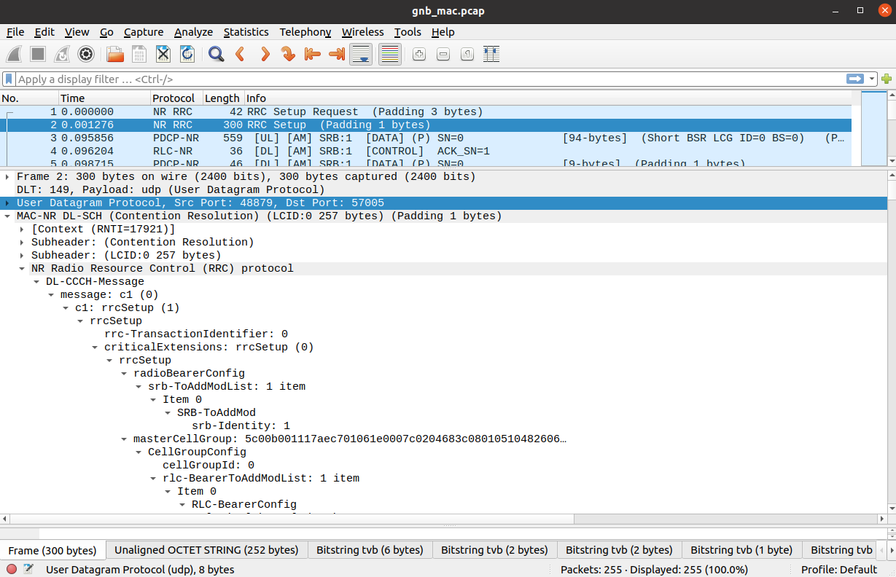
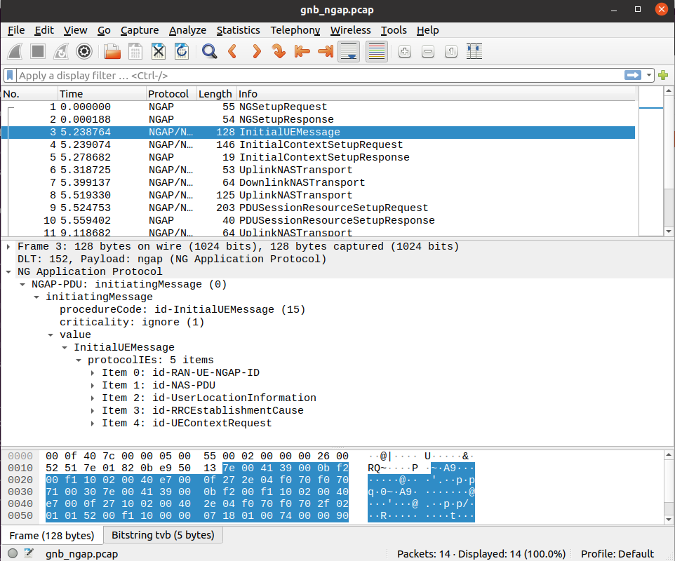
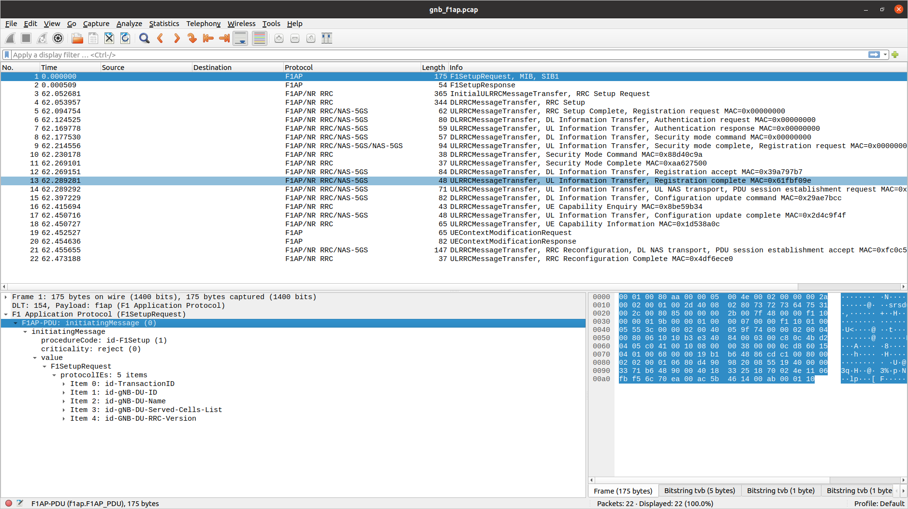

Outputs
Logs
srsRAN Project provides users with a highly configurable logging mechanism, with per-layer and per-component log levels. Set the log file path and log levels in the gNB config file. See the Configuration Reference for more details.
The format used for all log messages is as follows:
Timestamp [Layer] [Level] [TTI] message
Where the fields are:
Timestamp in YYYY-MM-DDTHH:MM:SS.UUUUUU format at which log message was generated
Layer can be one of MAC/RLC/PDCP/RRC/SDAP/NGAP/GTPU/RADIO/FAPI/F1U/DU/CU/LIB. PHY layers are specified as downlink or uplink and with executor number e.g. DL-PHY1.
Level can be one of E/W/I/D for error, warning, info and debug respectively.
TTI is only shown for PHY or MAC messages and is in the format SFN.sn where SFN is System Frame Number and sn is slot number.
An example log file excerpt can be seen below:
2023-03-15T18:29:25.142200 [MAC ] [I] [ 276.14] UL PDU rnti=0x4601 ue=0 subPDUs: [lcid=1: len=96, SBSR: lcg=0 bs=0, SE_PHR: total_len=3, PAD: len=424]
2023-03-15T18:29:25.142204 [RLC ] [I] ue=0 SRB1 UL: RX PDU. pdu_len=96 dc=data p=1 si=full sn=0 so=0
2023-03-15T18:29:25.142226 [PDCP ] [I] ue=0 SRB1 UL: RX PDU. type=data pdu_len=94 sn=0 count=0
2023-03-15T18:29:25.142228 [PDCP ] [I] ue=0 SRB1 UL: RX SDU. count=0
2023-03-15T18:29:25.142245 [RRC ] [D] ue=0 SRB1 - Rx DCCH UL rrcSetupComplete (88 B)
2023-03-15T18:29:25.142249 [RRC ] [D] Content: [
{
"UL-DCCH-Message": {
"message": {
"c1": {
"rrcSetupComplete": {
"rrc-TransactionIdentifier": 0,
"criticalExtensions": {
"rrcSetupComplete": {
"selectedPLMN-Identity": 1,
"registeredAMF": {
"amf-Identifier": "000000100000000001000000"
},
"guami-Type": "native",
"dedicatedNAS-Message": "7e01820be950137e004139000bf200f110020040e7000f272e04f070f0707100307e004139000bf200f110020040e7000f27100200402e04f070f0702f0201015200f11000000718010074000090530101"
}
}
}
}
}
}
}
]
2023-03-15T18:29:25.142253 [RRC ] [D] ue=0 "RRC Setup Procedure" finished successfully
2023-03-15T18:29:25.142263 [NGAP ] [I] ue=0 Sending InitialUeMessage (ran_ue_id=0)
PCAPs
srsRAN Project can output PCAPs at the following layers:
MAC
RLC
NGAP
N3
E1AP
F1AP
E2AP
To output these PCAPs, they must first be enabled on a per-layer basis in the gNB configuration file. See the Configuration Reference for more details.
MAC
To analyze a MAC-layer PCAP using Wireshark, you will need to configure User DLT 149 for UDP and enable the mac_nr_udp protocol:
Go to Edit->Preferences->Protocols->DLT_USER->Edit and add an entry with DLT=149 and Payload protocol=udp.
Go to Edit->Preferences->Protocols->DLT_USER->Edit and add an entry with DLT=157 and Payload protocol=mac-nr-framed.
Go to Analyze->Enabled Protocols->MAC-NR and enable mac_nr_udp
Go to Edit->Preferences->Protocols->MAC-NR: Enable both checkboxes “Attempt to…”; Set LCID->DRB mapping to “From configuration protocol”.

RLC
Note
To correctly view the RLC PCAPs you will need Wireshark v4.3.x or later.
To analyze a RLC-layer PCAP using Wireshark, you will need to configure User DLT 149 for UDP and enable the rlc_nr_udp protocol:
Go to Edit->Preferences->Protocols->DLT_USER->Edit and add an entry with DLT=149 and Payload protocol=udp.
Go to Analyze->Enabled Protocols->RLC-NR and enable rlc_nr_udp
Go to Edit->Preferences->Protocols->RLC-NR and configure according to your needs.

NGAP
To analyze an NGAP-layer PCAP using Wireshark, you will need to configure User DLT 152 for NGAP and enable detection and decoding 5G-EA0 ciphered messages:
Go to Edit->Preferences->Protocols->DLT_USER->Edit and add an entry with DLT=152 and Payload protocol=ngap.
Go to Edit->Preferences->Protocols->NAS-5GS and enable “Try to detect and decode 5G-EA0 ciphered messages”.

N3
To analyze a N3 PCAP using Wireshark, you will need to configure User DLT 156 for GTP:
Go to Edit->Preferences->Protocols->DLT_USER->Edit and add an entry with DLT=156 and Payload Protocol=gtp.

E1AP
To analyze an E1AP PCAP using Wireshark, you will need to configure User DLT 153 for E1AP:
Go to Edit->Preferences->Protocols->DLT_USER->Edit and add an entry with DLT=153 and Payload Protocol=e1ap.

F1AP
To analyze an F1AP PCAP using Wireshark, you will need to configure User DLT 154 for F1AP:
Go to Edit->Preferences->Protocols->DLT_USER->Edit and add an entry with DLT=154 and Payload Protocol=f1ap.

E2AP
To analyze an E2AP PCAP using Wireshark, you will need to configure User DLT 155 for E2AP:
Go to Edit->Preferences->Protocols->DLT_USER->Edit and add an entry with DLT=155 and Payload Protocol=e2ap.

JSON Metrics
srsRAN Project supports the reporting of the console metrics to JSON data format over websocket. This is used to generate the output seen in the GrafanaGUI.
The metrics can be received and printed to stdout using a Python script.
Firstly, the metrics output and remote control can be enabled by adding the following to your configuration file:
metrics:
enable_json: true
remote_control:
bind_addr: 0.0.0.0
port: 8001
enabled: true
With this enabled, the websocket will listen on 127.0.0.1:8001. The metrics can be subscribed and written to stdout in real-time while the gNB is running using the following Python code:
#!/usr/bin/env python3
from contextlib import suppress
import os
import json
from time import sleep
import websocket
def _on_open(ws: websocket.WebSocketApp):
ws.send(json.dumps({"cmd": "metrics_subscribe"}))
def _on_message(_ws: websocket.WebSocketApp, message: str):
with suppress(json.JSONDecodeError):
metric = json.loads(message)
if "cmd" not in metric:
print(json.dumps(metric))
if __name__ == "__main__":
ws_app = websocket.WebSocketApp(
"ws://" + os.environ["WS_URL"],
on_open=_on_open,
on_message=_on_message,
)
while ws_app.run_forever(): # Returns False when the connection is closed
sleep(1)
You must specify the address and port of the websocket via environment variable WS_URL, e.g. start the script as follows:
WS_URL="127.0.0.1:8001" ./metrics_ws_receiver.py
This script will need to be run in parallel with the gNB to successfully print the metrics. The metrics will be written to stdout.
You can download the source-code for the above Python script here.
The metrics are generated on a layer basis, and each layer can be enabled through the configuration file.
metrics:
layers: # Enable metrics per layer
enable_executor: true # false to disable
enable_app_usage: true # false to disable
enable_ngap: true # false to disable
enable_rrc: true # false to disable
enable_e1ap: true # false to disable
enable_pdcp: true # false to disable
enable_sched: true # false to disable
enable_rlc: true # false to disable
enable_mac: true # false to disable
enable_du_low: true # false to disable
enable_ru: true # false to disable
MAC metrics
The MAC metrics are encapsulated in the DU metric object, which contains the following keys:
du: Includes the DU high metrics under thedu_highkey, which contains themacmetrics, which in turn containsdlmetrics, which is a list of cells with specific MAC dowlink metrics. Each entry in thedllist corresponds to a cell configured in the DU.
timestamp: Date and time at which the metrics were generated.
and is structured as shown below.
{
"du": {
"du_high": {
"mac": {
"dl": [ # List of cells, one item with MAC metrics per cell.
{
"average_latency_us": 45.473, "cpu_usage_percent": 0.0045473, "max_latency_us": 255.174, "min_latency_us": 6.918, "pci": 1
},
{
"average_latency_us": 44.533, "cpu_usage_percent": 0.0044533, "max_latency_us": 232.088, "min_latency_us": 5.822, "pci": 2
}
]
}
}
},
"timestamp": "2025-11-04T15:51:26.845"
}
The table below describes the MAC metrics reported in the DU metrics JSON output, under the dl key.
MAC metrics |
Description |
|---|---|
|
Physical cell ID. |
|
Average latency of the MAC at handling slot indications, in microseconds. |
|
Average CPU usage percentage of the MAC handling slot indications. |
|
Minimum/Maximum latency of the MAC at handling slot indications, in microseconds. |
Scheduler metrics
The scheduler metrics object contains 2 keys:
cells: List of cell metrics objects, one per cell configured in the DU; this list is accessed through the keycells, which is structured similarly as shown below:
timestamp: Date and time at which the metrics were generated.
{
"cells": [ # List of cells, one metric object per cell.
{
"cell_metrics": {
"average_latency": 3,
...
},
"event_list": [ # List of events for this cell.
{
"event_type": "ue_create",
"rnti": 17921,
"slot": "50.5"
},
...
],
"ue_list": [ # List of UEs for this cell with their metrics.
{
"avg_ce_delay": 3.75,
...
}
]
},
...
],
"timestamp": "2025-11-04T02:12:48.105"
}
Each element of the cells list contains the metrics of the cell, which can be accessed through the following keys:
cell_metrics: reports the cell metrics for a given cell; refer to Scheduler cell metrics for details.
event_list: list of events reported in this cell metric report. Refer to Cell events for details.
ue_list: reports the list of UEs connected to this cell; each UE entry contains the UE metrics described in Scheduler UE metrics.
Scheduler cell metrics
Scheduler cell metric |
Description |
|---|---|
|
Number of error indications received by the scheduler from lower layers. |
|
Average/Maximum scheduler decision latency in microseconds. |
|
Number of failed PDCCH allocation attempts. |
|
Number of failed UCI allocation attempts. |
|
Scheduler decision latency histogram: each bucket counts the number of scheduling decisions that took a latency within a specific range. Each bucket range is 50 microseconds, starting from 0 microseconds up to 500 microseconds. |
|
Number of MSG3s correctly received/decoded (CRC=OK) / not correctly received/decoded (CRC=KO). |
|
Average PRACH delay in slots: it measures the time between the slot when the PRACH is received by PHY layer and the slot when the PRACH indication reach the scheduler. Value is null if no PRACH was received during the measurement period. |
|
Number of failed PDSCH allocations due to late HARQs. |
|
Number of failed PUSCH allocations due to late HARQs. |
|
Average number of RBs per UL slot used for PUCCH grants. |
|
Sum of the number of RBs per slot used for PUSCH grants. Each entry in the array corresponds to a TDD slot index. |
|
Sum of the number of RBs per slot used for PDSCH grants. Each entry in the array corresponds to a TDD slot index. |
|
List of UE metrics reported in this cell metric report. Refer to Scheduler UE metrics for details. |
Cell events
Metric |
Description |
|---|---|
|
Possible events are: ue_create for UE creation, ue_reconf for UE reconfiguration, ue_rem for UE removal. |
|
RNTI of the UE for which the event occured. |
|
Slot at which the creation/reconfiguration/removal procedure was completed in the scheduler. |
Scheduler UE metrics
Metric |
Description |
|---|---|
|
UE index in the DU for this UE. |
|
Physical cell id. |
|
Currently used C-RNTI for this UE. |
|
Mean Channel Quality Indicator. |
|
Mean Downlink Rank Indicator. |
|
Mean Uplink Rank Indicator. |
|
Average MCS index used for DL grants. |
|
Experienced MAC DL bit rate in kbps, considering the size of the allocated MAC DL PDUs for which a positive HARQ-ACK was received. |
|
Number of positive DL HARQ-ACKs received. |
|
Number of detected DL HARQ NACKs or DL HARQ-ACK misdetections. |
|
Sum of the last DL buffer occupancy reports of all logical channels. |
|
SNR in dB estimated for the PUSCH. |
|
RSRP in dB estimated for the PUSCH. |
|
SNR in dB estimated for the PUCCH. |
|
Average Timing Advance in nanoseconds: it includes the TA offset for all UL grants. |
|
Average Timing advance in nanoseconds: it includes the TA offset for PUSCH grants only. |
|
Average Timing advance in nanoseconds: it includes the TA offset for PUCCH grants only. |
|
Average Timing advance in nanoseconds: it includes the TA offset for SRS grants only. |
|
Average MCS index used for UL grants. |
|
Experienced MAC UL bit rate in kbps, considering the size of the allocated MAC UL PDUs for which the respective CRC was decoded. |
|
Number of PUSCH grants positively decoded (CRC=OK). |
|
Number of PUSCH grants that could not be decoded (CRC=KO). |
|
Last PHR value reported. |
|
Maximum interval in slots between 2 consecutive PUSCH allocated to this UE. |
|
Maximum interval in slots between 2 consecutive PDSCH allocated to this UE. |
|
Sum of the last UL buffer status reports (BSRs) of all logical channel groups. |
|
Number of invalid UCI carrying HARQ-ACK bits detected on PUCCH format 0 and 1. |
|
Number of invalid UCI carrying HARQ-ACK bits detected on PUCCH format 2, 3 and 4. |
|
Number of invalid UCI carrying bits CSIs detected on PUCCH format 2, 3 and 4. |
|
Number of invalid UCI carrying HARQ-ACK bits detected on PUSCH. |
|
Number of invalid UCI carrying CSI bits detected on PUSCH. |
|
Average/Maximum MAC CE decoding delay in ms: it measures the time between the slot when the MAC PDU carrying the MAC CE is received and the slot when the MAC CE processing is completed. |
|
Average/Maximum CRC decoding delay in ms: it measures the time between the slot when the MAC PDU carrying the PUSCH is received and the slot when the PUSCH processing is completed. |
|
Average/Maximum PUSCH HARQ delay in ms: it measures the time between the slot when the PUSCH is received and the slot when the UCI carrying HARQ-ACK bits for that PUSCH decoding is completed. |
|
Average/Maximum PUCCH HARQ delay in ms: it measures the time between the slot when the PUCCH is received and the slot when the UCI carrying HARQ-ACK bits for that PUCCH decoding is completed. |
|
Average/Maximum SR to PUSCH delay in ms: it measures the time between the slot when the SR is received and the slot when the first PUSCH (following the SR) is allocated for this UE. |
OFH metrics
The structured OFH metrics are shown below:
{
"timestamp": "2025-11-04T15:51:26.845",
"ru": {
"ofh": {
"timing_stats": {
"nof_skipped_symbols": 0,
"skipped_symbols_max_burst": 0
},
"cells": [
{
"pci": 0,
"ul": {
"received_packets": {
"total": 0,
"early": 0,
"on_time": 0,
"late": 0,
"earliest_msg_us": 0.0,
"latest_msg_us": 0.0
},
"ethernet_receiver": {
"average_throughput_mbps": 0.0,
"average_latency_us": 0.0,
"max_latency_us": 0.0,
"cpu_usage_percent": 0.0
},
"message_decoder": {
"prach": {
"nof_dropped_messages": 0,
"average_latency_us": 0.0,
"max_latency_us": 0.0,
"cpu_usage_percent": 0.0
},
"data": {
"nof_dropped_messages": 0,
"average_latency_us": 0.0,
"max_latency_us": 0.0,
"cpu_usage_percent": 0.0
},
"ecpri": {
"nof_future_seqid_messages": 0,
"nof_past_seqid_messages": 0
}
},
"rx_window_stats": {
"nof_missed_uplink_symbols": 0,
"nof_missed_prach_occasions": 0
}
},
"dl": {
"ethernet_transmitter": {
"average_throughput_mbps": 0.0,
"average_latency_us": 0.0,
"max_latency_us": 0.0,
"cpu_usage_percent": 0.0
},
"message_encoder": {
"dl_cp": {
"average_latency_us": 0,
"max_latency_us": 0,
"cpu_usage_percent": 0
},
"ul_cp": {
"average_latency_us": 0,
"max_latency_us": 0,
"cpu_usage_percent": 0
},
"dl_up": {
"average_latency_us": 0,
"max_latency_us": 0,
"cpu_usage_percent": 0
},
},
"message_transmitter": {
"average_latency_us": 0,
"max_latency_us": 0,
"cpu_usage_percent": 0
},
"transmitter_stats": {
"late_dl_slots": 0,
"late_ul_slot_requests": 0,
"late_cp_dl_messages": 0,
"late_up_dl_messages": 0,
"late_cp_ul_messages": 0
}
}
}
]
}
}
}
The OFH metrics are structured into the following sections:
timing_statsrepresenting the timing statistics.cellsrepresenting a list of cells metrics.
The timing_stats metrics are shown in the following table:
OFH timing_stats metrics |
Description |
|---|---|
|
Number of symbols skipped when the timing worker wakes up late. |
|
Maximum number of skipped symbols in a burst. |
A cell is composed of three elements as it is shown in the following table:
OFH cells metrics |
Description |
|---|---|
|
Physical Cell Identifier (described in 3GPP TS 38.331). Supported [0 - 1007]. |
|
Object holding the Uplink metrics for the given cell. |
|
Object holding the Downlink metrics for the given cell. |
The Uplink metrics are structured in the following sections:
received_packetsethernet_receivermessage_decoderrx_window_stats
The Received packets metrics for Uplink are described in the following table:
OFH Uplink cells received packets metrics |
Description |
|---|---|
|
Total number of received packets. |
|
Number of OFH packets received early. |
|
Number of OFH packets received on time. |
|
Number of OFH packets received late. |
|
Earliest received packet in microseconds. |
|
Latest received packet in microseconds. |
The Ethernet receiver metrics for Uplink is described in the following table:
OFH cell Ethernet receiver metrics |
Description |
|---|---|
|
Average received throughput during metrics period represented in megabits per second. |
|
Average latency of packet reception in microseconds. |
|
Maximum latency of packet reception in microseconds. |
|
CPU usage in percentage of the Ethernet receiver. |
The Uplink message decoder metrics are structured in the following sections:
prachdataecpri
The PRACH metrics for Uplink message decoder are described in the following table:
OFH cell PRACH messages decoder metrics |
Description |
|---|---|
|
Number of dropped PRACH messages. |
|
Average latency of PRACH message decoding. |
|
Maximum latency of PRACH message decoding. |
|
CPU usage in percentage of PRACH messages decoding. |
The Data metrics for Uplink message decoder are described in the following table:
OFH cell Data messages decoder metrics |
Description |
|---|---|
|
Number of dropped Data messages. |
|
Average decoding latency of the received Data messages. |
|
Maximum decoding latency of the received Data messages. |
|
CPU usage in percentage of the Data flow. |
The eCPRI metrics for Uplink message decoder are described in the following table:
OFH Uplink cells message decoder eCPRI metrics |
Description |
|---|---|
|
Number of skipped messages by the eCPRI. |
|
Number of dropped messages by the eCPRI. |
The Receiver window statistics metrics for Uplink are described in the following table:
OFH Uplink cells Receiver window statistics metrics |
Description |
|---|---|
|
Number of requested uplink symbols that were not fully received within the expected reception window. |
|
Number of PRACHs that were not fully received within the expected reception window. |
The Downlink metrics are structured in the following sections:
ethernet_transmittermessage_encodermessage_transmittertransmitter_stats
The Ethernet transmitter metrics for Downlink are described in the following table:
OFH cell Ethernet transmitter metrics |
Description |
|---|---|
|
Average transmitted throughput during metrics period represented in megabits per second. |
|
Average latency of packet transmission in microseconds. |
|
Maximum latency of packet transmission in microseconds. |
|
CPU usage in percentage of the Ethernet transmitter. |
The Downlink message encoder metrics are structured in the following sections:
dl_cpul_cpdl_up
The message encoder Downlink Control-Plane metrics are described in the following table:
OFH cell Downlink Control-Plane messages encoder metrics |
Description |
|---|---|
|
Average latency of the Downlink Control-Plane processing in microseconds. |
|
Maximum latency of the Downlink Control-Plane processing in microseconds. |
|
CPU usage in percentage of the Downlink Control-Plane processing. |
The message encoder Uplink Control-Plane metrics are described in the following table:
OFH cell Uplink Control-Plane messages encoder metrics |
Description |
|---|---|
|
Average latency of the Uplink Control-Plane processing in microseconds. |
|
Maximum latency of the Uplink Control-Plane processing in microseconds. |
|
CPU usage in percentage of the Uplink Control-Plane processing. |
The Message encoder Downlink User-Plane metrics are described in the following table:
OFH cell Downlink User-Plane messages encoder metrics |
Description |
|---|---|
|
Average latency of the Downlink User-Plane processing in microseconds. |
|
Maximum latency of the Downlink User-Plane processing in microseconds. |
|
CPU usage in percentage of the Downlink User-Plane processing. |
The Message transmitter metrics for Downlink are described in the following table:
OFH cell messages transmitter metrics |
Description |
|---|---|
|
Average latency of messages processing (including Ethernet transmission) performed at each symbol boundary. |
|
Maximum latency of messages processing (including Ethernet transmission) performed at each symbol boundary. |
|
CPU usage in percentage of the messages transmitter. |
The Transmitter statistics for Downlink is described in the following table:
OFH Downlink cells transmitter statistics metrics |
Description |
|---|---|
|
Number of late downlink resource grids received from the PHY. |
|
Number of late uplink request. |
|
Number of late Control-Plane downlink messages, i.e., messages that were not transmitted. |
|
Number of late User-Plane downlink messages, i.e., messages that were not transmitted. |
|
Number of late Control-Plane uplink messages, i.e., messages that were not transmitted. |
NGAP metrics
The NGAP metrics are encapsulated in the CU-CP metric object, which contains the following keys:
cu-cp: Includes the CU-CP ID under theidkey, NGAP metrics under thengapskey, and RRC metrics under therrcskey.
timestamp: Date and time at which the metrics were generated.
and is structured as shown below.
{
"cu-cp": {
"id": "srs-cu-cp",
"ngaps": {
"ngap": [ # List of NGAP instances for connected AMFs.
...
],
"nof_handover_preparations_requested": 0,
"nof_successful_handover_preparations": 0
},
"rrcs": {
"du": [ # List of RRC instances for connected DUs.
...
],
"nof_handover_executions_requested": 0,
"nof_successful_handover_executions": 0
}
},
"timestamp": "2025-11-04T15:51:26.845"
}
The NGAP metrics are structured as shown below.
{
"ngaps": {
"ngap": [
{
"amf_name": "open5gs-amf0",
"connected": true,
"paging_measurement": {
"nof_cn_initiated_paging_requests": 0
},
"pdu_session_management": {
"nof_pdu_sessions_failed_to_setup": {
"misc-ctrl_processing_overload": 0,
"misc-hardware_fail": 0,
"misc-not_enough_user_plane_processing_res": 0,
"misc-om_intervention": 0,
"misc-unknown_plmn_or_sn_pn": 0,
"nas-authentication_fail": 0,
"nas-deregister": 0,
"nas-normal_release": 0,
"nas-unspecified": 0,
"protocol-abstract_syntax_error_falsely_constructed_msg": 0,
"protocol-abstract_syntax_error_ignore_and_notify": 0,
"protocol-abstract_syntax_error_reject": 0,
"protocol-msg_not_compatible_with_receiver_state": 0,
"protocol-semantic_error": 0,
"protocol-transfer_syntax_error": 0,
"protocol-unspecified": 0,
"radio_network-cag_only_access_denied": 0,
"radio_network-cell_not_available": 0,
"radio_network-encryption_and_or_integrity_protection_algorithms_not_supported": 0,
"radio_network-fail_in_radio_interface_proc": 0,
"radio_network-ho_cancelled": 0,
"radio_network-ho_desirable_for_radio_reason": 0,
"radio_network-ho_fail_in_target_5_gc_ngran_node_or_target_sys": 0,
"radio_network-ho_target_not_allowed": 0,
"radio_network-ims_voice_eps_fallback_or_rat_fallback_triggered": 0,
"radio_network-inconsistent_remote_ue_ngap_id": 0,
"radio_network-inconsistent_slice_info_for_the_session": 0,
"radio_network-indicated_mbs_session_area_info_not_served_by_the_gnb": 0,
"radio_network-insufficient_ue_cap": 0,
"radio_network-interaction_with_other_proc": 0,
"radio_network-invalid_qos_combination": 0,
"radio_network-misaligned_assoc_for_multicast_unicast": 0,
"radio_network-multiple_location_report_ref_id_instances": 0,
"radio_network-multiple_pdu_session_id_instances": 0,
"radio_network-multiple_qos_flow_id_instances": 0,
"radio_network-n26_interface_not_available": 0,
"radio_network-ng_inter_sys_ho_triggered": 0,
"radio_network-ng_intra_sys_ho_triggered": 0,
"radio_network-no_radio_res_available_in_target_cell": 0,
"radio_network-not_supported_5qi_value": 0,
"radio_network-npn_access_denied": 0,
"radio_network-partial_ho": 0,
"radio_network-radio_conn_with_ue_lost": 0,
"radio_network-radio_res_not_available": 0,
"radio_network-redcap_ue_not_supported": 0,
"radio_network-redirection": 0,
"radio_network-reduce_load_in_serving_cell": 0,
"radio_network-release_due_to_5gc_generated_reason": 0,
"radio_network-release_due_to_cn_detected_mob": 0,
"radio_network-release_due_to_ngran_generated_reason": 0,
"radio_network-release_due_to_pre_emption": 0,
"radio_network-res_not_available_for_the_slice": 0,
"radio_network-res_optim_ho": 0,
"radio_network-rsn_not_available_for_the_up": 0,
"radio_network-slice_not_supported": 0,
"radio_network-successful_ho": 0,
"radio_network-time_crit_ho": 0,
"radio_network-tngrelocoverall_expiry": 0,
"radio_network-tngrelocprep_expiry": 0,
"radio_network-txnrelocoverall_expiry": 0,
"radio_network-ue_context_transfer": 0,
"radio_network-ue_in_rrc_inactive_state_not_reachable": 0,
"radio_network-ue_max_integrity_protected_data_rate_reason": 0,
"radio_network-unknown_local_ue_ngap_id": 0,
"radio_network-unknown_mbs_session_id": 0,
"radio_network-unknown_pdu_session_id": 0,
"radio_network-unknown_target_id": 0,
"radio_network-unkown_qos_flow_id": 0,
"radio_network-unspecified": 0,
"radio_network-up_confidentiality_protection_not_possible": 0,
"radio_network-up_integrity_protection_not_possible": 0,
"radio_network-user_inactivity": 0,
"radio_network-xn_ho_triggered": 0,
"transport-transport_res_unavailable": 0,
"transport-unspecified": 0
},
"nof_pdu_sessions_requested_to_setup": 1,
"nof_pdu_sessions_successfully_setup": 1,
"s-nssai": "(sst=1 sd=na)"
},
"supported_plmns": "[ 00101, 99902, ]"
}
],
"nof_handover_preparations_requested": 0,
"nof_successful_handover_preparations": 0
}
}
The table below describes the NGAP metrics reported in the CU-CP metrics JSON output, under the ngaps key.
NGAP metrics |
Description |
|---|---|
|
A list of NGAP instances for connected AMFs. |
|
Number of handover preparations requested, see TS 128.552 section 5.1.3.7.1.1. |
|
Number of successful handover preparations, see TS 128.552 section 5.1.3.7.1.2. |
The ngap list contains one object per connected AMF, structured as shown below.
NGAP metrics |
Description |
|---|---|
|
Name of the related AMF. |
|
AMF connection status. |
|
Contains number of CN initiated paging requests, see TS 128.552 section 5.1.1.27.1. |
|
|
|
Contains a list of supported PLMNs for the AMF. |
RRC metrics
The RRC metrics are encapsulated in the CU-CP metric object, which contains the following keys:
cu-cp: Includes the CU-CP ID under theidkey, NGAP metrics under thengapskey, and RRC metrics under therrcskey.
timestamp: Date and time at which the metrics were generated.
and is structured as shown below.
{
"cu-cp": {
"id": "srs-cu-cp",
"ngaps": {
"ngap": [ # List of NGAP instances for connected AMFs.
...
],
"nof_handover_preparations_requested": 0,
"nof_successful_handover_preparations": 0
},
"rrcs": {
"du": [ # List of RRC instances for connected DUs.
...
],
"nof_handover_executions_requested": 0,
"nof_successful_handover_executions": 0
}
},
"timestamp": "2025-11-04T15:51:26.845"
}
The RRC metrics are structured as shown below.
{
"rrcs": {
"du": [
{
"gnb_du_id": 0,
"rrc_connection_establishment": {
"attempted_rrc_connection_establishments": {
"emergency": 0,
"high_prio_access": 0,
"mcs_prio_access": 0,
"mo_data": 0,
"mo_sig": 1,
"mo_sms": 0,
"mo_video_call": 0,
"mo_voice_call": 0,
"mps_prio_access": 0,
"mt_access": 0,
"unknown": 0
},
"successful_rrc_connection_establishments": {
"emergency": 0,
"high_prio_access": 0,
"mcs_prio_access": 0,
"mo_data": 0,
"mo_sig": 1,
"mo_sms": 0,
"mo_video_call": 0,
"mo_voice_call": 0,
"mps_prio_access": 0,
"mt_access": 0,
"unknown": 0
}
},
"rrc_connection_number": {
"max_nof_inactive_rrc_connections": 0,
"max_nof_rrc_connections": 1,
"mean_nof_inactive_rrc_connections": 0,
"mean_nof_rrc_connections": 1
},
"rrc_connection_reestablishment": {
"attempted_rrc_connection_reestablishments": 0,
"successful_rrc_connection_reestablishments_with_ue_context": 0,
"successful_rrc_connection_reestablishments_without_ue_context": 0
},
"rrc_connection_resume": {
"attempted_rrc_connection_resumes": {
"emergency": 0,
"high_prio_access": 0,
"mcs_prio_access": 0,
"mo_data": 0,
"mo_sig": 0,
"mo_sms": 0,
"mo_video_call": 0,
"mo_voice_call": 0,
"mps_prio_access": 0,
"mt_access": 0,
"unknown": 0
},
"attempted_rrc_connection_resumes_followed_by_rrc_setup": {
"emergency": 0,
"high_prio_access": 0,
"mcs_prio_access": 0,
"mo_data": 0,
"mo_sig": 0,
"mo_sms": 0,
"mo_video_call": 0,
"mo_voice_call": 0,
"mps_prio_access": 0,
"mt_access": 0,
"unknown": 0
},
"rrc_connection_resumes_followed_by_network_release": {
"emergency": 0,
"high_prio_access": 0,
"mcs_prio_access": 0,
"mo_data": 0,
"mo_sig": 0,
"mo_sms": 0,
"mo_video_call": 0,
"mo_voice_call": 0,
"mps_prio_access": 0,
"mt_access": 0,
"unknown": 0
},
"successful_rrc_connection_resumes": {
"emergency": 0,
"high_prio_access": 0,
"mcs_prio_access": 0,
"mo_data": 0,
"mo_sig": 0,
"mo_sms": 0,
"mo_video_call": 0,
"mo_voice_call": 0,
"mps_prio_access": 0,
"mt_access": 0,
"unknown": 0
},
"successful_rrc_connection_resumes_with_fallback": {
"emergency": 0,
"high_prio_access": 0,
"mcs_prio_access": 0,
"mo_data": 0,
"mo_sig": 0,
"mo_sms": 0,
"mo_video_call": 0,
"mo_voice_call": 0,
"mps_prio_access": 0,
"mt_access": 0,
"unknown": 0
}
}
}
],
"nof_handover_executions_requested": 0,
"nof_successful_handover_executions": 0
}
}
The table below describes the RRC metrics reported in the CU-CP metrics JSON output, under the rrcs key.
RRC metrics |
Description |
|---|---|
|
A list of RRC instances for connected DUs. |
|
Number of handover executions requested, see TS 128.552 section 5.1.1.6.2.1. |
|
Number of successful handover executions, see TS 128.552 section 5.1.1.6.2.2. |
The du list contains one object per connected DU, structured as shown below.
RRC metrics |
Description |
|---|---|
|
ID of the related DU. |
|
|
|
|
|
|
|
|
Executors metrics
The structured Executors metrics are shown below:
{
"timestamp": "2025-11-04T15:51:26.845",
"executor_metrics": {
"name": "",
"nof_executes": 0,
"nof_defers": 0,
"enqueue_avg": 0,
"enqueue_max": 0,
"task_avg": 0,
"task_max": 0,
"cpu_load": 0,
"nof_vol_ctxt_switch": 0,
"nof_invol_ctxt_switch": 0.0
}
}
The table below describes the Executors metrics.
Executors metrics |
Description |
|---|---|
|
Executor name. |
|
Number of times executor ran a task. |
|
Number of times a task execution was deferred. |
|
Average task enqueueing latency in microseconds. |
|
Maximum task enqueueing latency in microseconds. |
|
Average task duration in microseconds. |
|
Maximum task duration in microseconds. |
|
Average CPU usage percentage of the executor. |
|
Number of voluntary context switches during the report period. |
|
Number of involuntary context switches during the report period. |
Application resource usage metrics
The structured Application resource usage metrics are shown below:
{
"timestamp": "2025-11-04T15:51:26.845",
"app_resource_usage": {
"cpu_usage_percent": 0,
"memory_usage_mb": 0,
"power_consumption_watts": 0
}
}
The table below describes the Application resource usage metrics.
Application resource usage metrics |
Description |
|---|---|
|
CPU usage of the application as a percentage. It can exceed 100% indicating how many CPU cores are utilized. |
|
Memory consumption of the application in Megabytes. |
|
CPU package power consumption in Watts measured while running the application. |